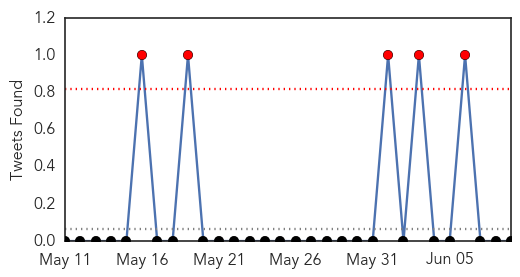
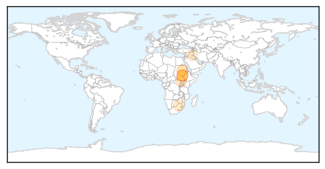
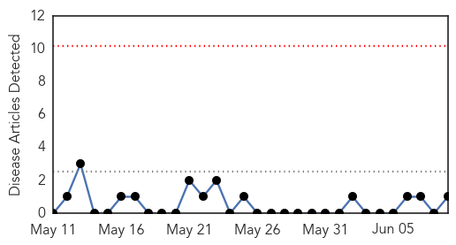
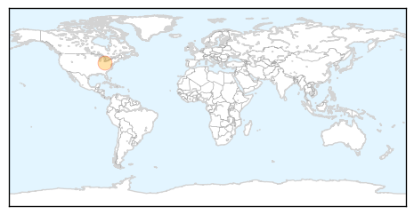

Cholera
30-Day Web Trend
10 alerts, 7 warnings

30-Day Twitter Trend
5 alerts, 0 warnings

Article Locations
Article Confidences

Top Articles:
- 0.986
- South Sudan reports nearly 1,500 cholera cases: UN
- 0.976
- South Sudan cholera outbreak spreads, nears 1500 cases
- 0.970
- Juba labs to conduct first cholera sample tests - South Sudan
- 0.711
- MTN, UNICEF Launch School Sanitation Drive in Face of Cholera - South Sudan
- 0.629
- ANC recalls Bloemhof mayor - Politics
- 0.555
- Threat of disease in Iraq villages flooded by militants
Top Tweets:
-
No tweets found for Jun 09, 2014
Mumps
30-Day Web Trend
0 alerts, 0 warnings

30-Day Twitter Trend
0 alerts, 0 warnings

Article Locations
Article Confidences

Top Articles:
Top Tweets:
-
No tweets found for Jun 09, 2014